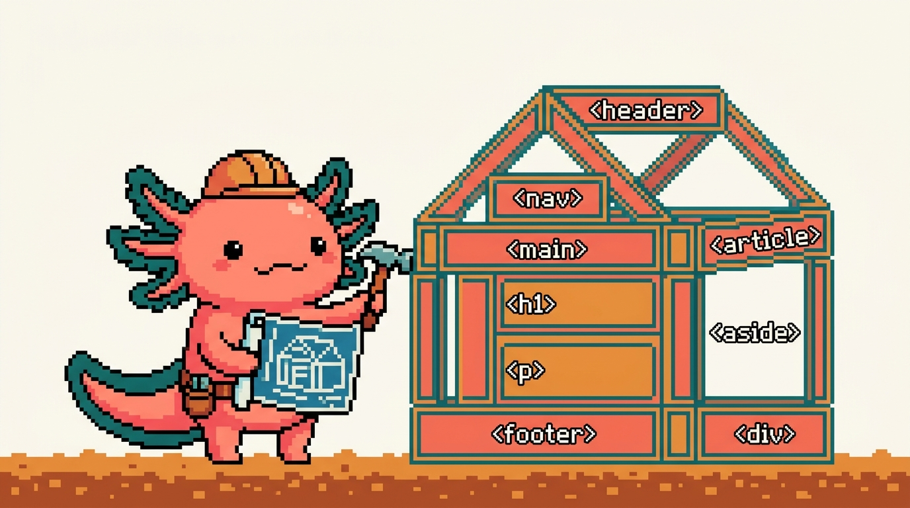

Módulo 01 — HTML

Objetivo del módulo: aprender HTML, el lenguaje que define la estructura de cualquier página web. Al terminar, podrás leer y escribir el "esqueleto" de una página, y entenderás el archivo
tunal-digital/sitio-web/index.htmlde tu propio sitio.
HTML es el mejor primer lenguaje: no tiene lógica complicada, los resultados se ven al instante en el navegador, y es la base sobre la que se montan CSS (módulo 02) y JavaScript (módulo 03).
¿De dónde sale esto en TUS proyectos?
Tu sitio tunaldigital.com está hecho con HTML "puro" en tunal-digital/sitio-web/index.html
(unas 40 000 líneas de contenido bilingüe). Es el ejemplo real que iremos abriendo. También
hay HTML dentro de tus apps de React (módulos 05–06), aunque ahí se escribe de forma especial
(JSX), que entenderás mejor habiendo dominado HTML primero.
¿Qué vas a poder hacer al terminar?
- Explicar qué es HTML y qué NO es (no es un "lenguaje de programación" en sentido estricto).
- Crear una página web desde cero con su estructura correcta.
- Usar las etiquetas más importantes: títulos, párrafos, enlaces, imágenes, listas, secciones.
- Construir un formulario de contacto (como el de tu sitio).
- Escribir HTML semántico y accesible (que cualquiera, incluidas personas con lectores de pantalla, pueda usar).
Capítulos
| # | Capítulo | Qué cubre |
|---|---|---|
| 01 | ¿Qué es HTML? | Qué es, etiquetas, tu primera página, cómo verla |
| 02 | Etiquetas de texto y enlaces | Títulos, párrafos, listas, enlaces, imágenes |
| 03 | La estructura de un documento | head, body, metadatos, HTML semántico |
| 04 | Formularios | Inputs, botones, validación; el formulario de tu sitio |
| 05 | Accesibilidad y buenas prácticas | ARIA, alt, contraste, HTML que sirve a todos |
| 06 | Tablas en HTML | table, filas y celdas, datos tabulares, accesibilidad |
| 07 | Multimedia: imágenes, audio y video | Formatos, responsive, srcset, video, iframe |
| 08 | Formularios avanzados | Todos los input, select, validación, accesibilidad |
| 09 | El head completo y el SEO | Metadatos, Open Graph, favicon, SEO |
| 10 | Accesibilidad y ARIA a fondo | Lectores de pantalla, roles, foco, WCAG |
| 11 | Entidades, símbolos y texto | &, caracteres especiales, etiquetas de texto |
| 12 | Cómo se unen HTML, CSS y JavaScript | El trío: estructura, estilo, comportamiento |
| 13 | Buenas prácticas y errores comunes | Validar, semántica, errores típicos |
| 14 | Mini-proyecto: una landing completa | Construir una página real paso a paso |
| 15 | Glosario de HTML y mapa | Todos los términos + mapa mental |
✅ Módulo 01 — versión ampliada (capítulos 01–15, ~90 páginas).
Antes de empezar
Para practicar solo necesitas dos cosas que ya tienes o conseguirás en 2 minutos:
1. Un editor de código (VS Code; ver COMO-ESTUDIAR.md).
2. Un navegador (para abrir tus páginas y verlas).
➡️ Empieza por Capítulo 01 — ¿Qué es HTML?.